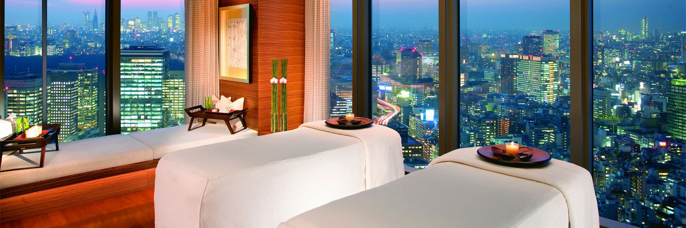
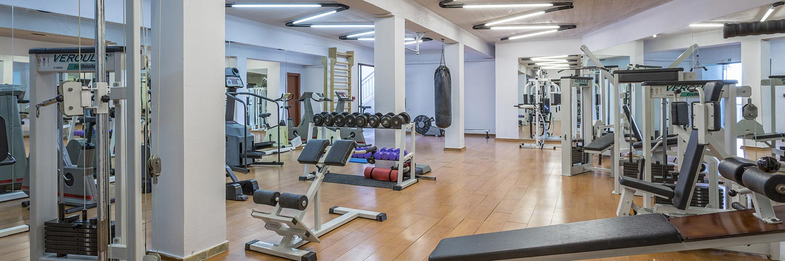
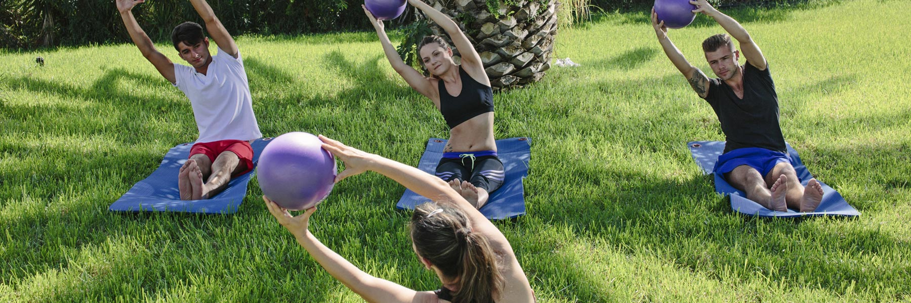

SPA
在蓝湾度假村，我们已经创建了放松和振兴的一个庇护所。我们欢迎您的终极之旅，这将刺激和振兴你的感官现代，豪华的设施。
水疗中心已专门设计来维持健康，美丽和改善整体福祉。斯亚索斯绝对安宁的地方，在蓝湾温泉，提供各种各样
的治疗恢复你的身体和你内心的平衡。我们的设施包括澡堂，桑拿，按摩浴缸和按摩室。

健身中心
请访问我们的现代化，设备齐全的健身房，让您的工作，同时享受斯基亚索斯和卡桑德拉湾度假村你的假期。
尽情享受鼓舞人心的瑜伽和普拉提课程户外，欣赏美丽的花园区，同时培养自己的
身体和灵魂。水上运动和引人入胜的活动也可在迷人的海滩Vasilias。

瑜伽
瑜伽發源印度北部的喜馬拉雅山麓地帶，古印度瑜伽修行者在大自然中修煉身心時，無意中發現各種動物與植物天生具有治療、
放松、睡眠、或保持清醒的方法，患病時能不經任何治療而自然痊愈。是古印度瑜伽修行者根據動物的
姿勢觀察、模仿並親自體驗，創立出一系列有益身心的鍛煉系統，也就是體位法。